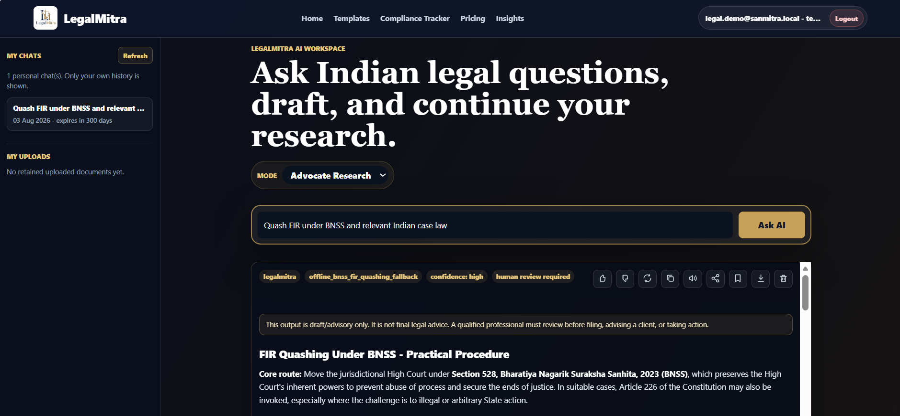
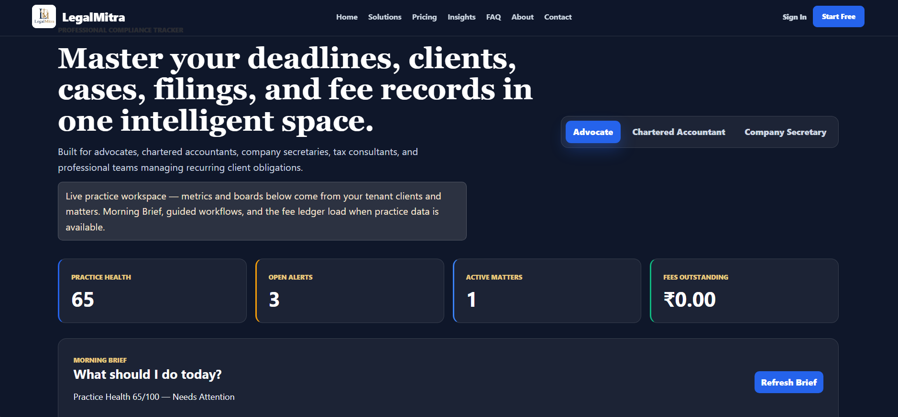
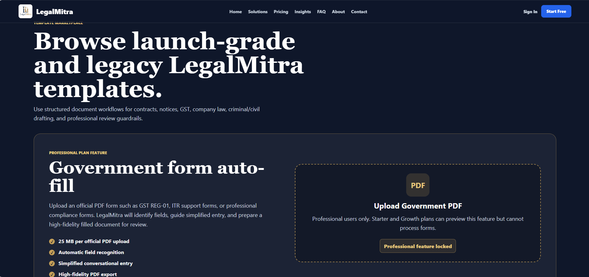
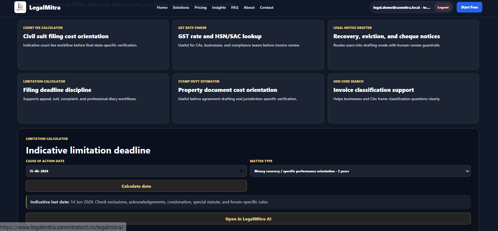

Professional Intelligence Workspace
One Intelligent Workspace for Legal, Tax, Governance & Compliance Professionals
Research, manage matters, get proactive alerts, draft with AI guidance, and keep your documents private — all in one workspace built for how professionals actually work.
⚖️ Grounded research with citations and honest refusal
🔒 Privacy-first — your documents, your control
📋 Morning Brief, deadlines, and proactive alerts
Try LegalMitra Free →
Namaste. I am your LegalMitra AI. How can I assist your practice today?
Ask a question to see the LegalMitra response here.
0/10

AI Assists. You Decide.
Every output carries citations, confidence scoring, and mandatory human-review signals.
One WorkspaceResearch · Practice · Alerts · Workflows · Privacy
6 ProfessionsAdvocates · CAs · CS · Corporate Legal · Compliance · Business
BNS/BNSSGrounded statutory awareness
AI + HumanEvery output requires professional review
Why LegalMitra
Not another AI chatbot. A professional intelligence workspace.
What changes when your entire practice runs through one intelligent workspace.
| Traditional Practice | With LegalMitra |
|---|---|
| Search through documents manually | Ask questions — get cited, grounded answers |
| Track deadlines in diary or spreadsheet | Morning Brief surfaces today's priorities automatically |
| Manual follow-up on matters | AI alerts for dormant cases and compliance gaps |
| Store PDFs in folders | Intelligent Case Cards with selective extracts |
| Cloud or nothing | Cloud Minimized or Chamber LAN — your choice |
| AI writes, you hope it's right | AI assists with citations, you review and decide |
Privacy-first
Your Documents. Your Choice. Your Control.
LegalMitra treats document custody as a first-class architecture decision, not an afterthought.
One Workspace
Everything you need, in one workspace.
Five capabilities that work independently and compound together.
Trusted Legal Research
- Grounded RAG with Citation Audit
- Bare Acts, Case Law, Notifications
- BNS/BNSS/BSA Crosswalk
- Confidence Scoring & Honest Refusal
Practice Intelligence
- Clients & Matter Management
- Document Case Cards
- Activity Timelines
- AI Matter Briefs
Proactive Assistant
- Daily Morning Brief
- Practice Health Score
- Deadline & Limitation Alerts
- Compliance Reminders
Guided AI Workflows
- Prepare Matter Response
- Draft Reply & Review
- Contract Risk Analysis
- Human-Gated Steps
Privacy-First Architecture
- Cloud Minimized Mode
- Chamber LAN Mode
- Tenant Isolation
- No Default Full-PDF Upload
Your Professional Day
How your workday becomes easier with LegalMitra.
From the first cup of tea to the last brief — one workspace through your entire day.
9:00 AM
Morning Brief
Today's priorities, deadlines, dormant matters, and compliance alerts — before you ask.
10:00 AM
Legal Research
Ask a question, get cited answers with statutory references, case law, and confidence scoring.
11:30 AM
Draft & Review
AI-assisted notices, replies, and contracts — with human-review guardrails on every output.
2:00 PM
Matter Update
Update client matters, add timeline entries, attach documents, and generate AI matter briefs.
4:00 PM
Compliance Alert
Proactive deadline alerts, limitation watches, and filing reminders before anything slips.
6:00 PM
Daily Summary
Practice health score, completed tasks, and tomorrow's preview — your practice in one glance.
Professional Workspace
This is where you will spend your day.
One intelligent workspace that adapts to your professional role and practice needs.
Morning Brief
Today's Practice Summary
3 deadlines approaching, 2 dormant matters flagged, 1 compliance alert pending review.
Active Matters
12
Open matters across 8 clients. 4 require attention this week.
Today's Deadlines
3
GST appeal limitation · Board resolution filing · Bail hearing prep
AI Research
Grounded Legal Research
Ask questions → Get cited answers with BNS/BNSS crosswalk, confidence scoring, and source dates. Research is grounded — with honest refusal when sources are insufficient.
Client Overview
Practice Intelligence
Client profiles, engagement history, matter context, and document case cards.
Matter Briefs
AI-Generated Briefs
Contextual matter summaries with timeline, key documents, and research history.
Guided Workflows
Step-by-Step AI
Prepare matter response, draft replies, review contracts — with human sign-off at every gate.
Compliance
Proactive Monitoring
Limitation watches, filing deadlines, regulatory updates, and practice health scoring.




Professional work, organized
Organized around how professionals actually work.
Research
- Bare Acts
- Judgments
- Circulars
- Notifications
Manage
- Clients
- Matters
- Documents
- Timelines
Draft
- Notices
- Contracts
- Replies
- Pleadings
Monitor
- Morning Brief
- Deadlines
- Compliance
- Health Score
Execute
- Guided Workflows
- Matter Briefs
- AI Assistance
- Review Gates
Built for professionals
One workspace. Six professional workstreams.
Legal Tools
Free professional utilities for everyday Indian legal and compliance work.
Use these quick tools for filing cost orientation, GST classification, legal notice preparation, limitation checks, stamp duty estimates, and HSN code review before moving into deeper LegalMitra research or drafting.
Choose any legal tool above.
The selected tool will open here with quick inputs and a LegalMitra AI handoff.
Trust
Why professionals trust LegalMitra.
Pricing
Choose the plan that matches your practice.
Upgrade when your workload grows. Start free — no commitment, no credit card.
Payment note: Paid LegalMitra plans are collected through Sanmita Tech Solutions Razorpay payment pages. Subscription access activates after successful payment verification.
For citizens, law students, and light professional testing.
- 5 AI legal research queries per day
- 5 template drafts per month
- 10 compliance tracker records
- GST Rate Finder and Limitation Calculator
- Copy and feedback on AI responses
For advocates, CAs, CS professionals, and consultants managing active client work.
- 50 AI legal research queries per day
- 30 template drafts per month
- 100 compliance tracker records
- All Legal Tools
- Save, share, and download response workspaces
For serious chambers, professional offices, and teams that need the full LegalMitra workflow.
- Unlimited AI legal research queries
- 200 template drafts per month
- Unlimited compliance tracker records
- Government/official PDF form auto-fill
- Priority support and professional workflow capacity
Live legal intelligence
Recent judgments and official legal updates in one professional scan.
Fresh public legal updates are grouped for quick scanning before you move into research, drafting, templates, or tracker workflows.
Recent Judgments
Loading recent judgments...
Official Legal Updates
Loading legal updates...
Insights
Blogs and practical notes for Indian legal workflows.
 GST Appeal Limitation: A Practical Note for Businesses and AdvisorsA source-credited note on limitation discipline, documentation, and filing readiness.
GST Appeal Limitation: A Practical Note for Businesses and AdvisorsA source-credited note on limitation discipline, documentation, and filing readiness. BNSS Transition Guide: What Lawyers Should Recheck Before FilingA practical transition guide for criminal-law filings and chamber review.
BNSS Transition Guide: What Lawyers Should Recheck Before FilingA practical transition guide for criminal-law filings and chamber review. LLP Annual Compliance in India: 2026 Practical ChecklistA filing-readiness checklist for Form 11, Form 8, books, and partner records.
LLP Annual Compliance in India: 2026 Practical ChecklistA filing-readiness checklist for Form 11, Form 8, books, and partner records.
FAQ
Common questions about LegalMitra.
Does LegalMitra give final legal advice?
No. LegalMitra assists research, drafting, and workflow preparation. A qualified professional must review before filing or final advice. Every AI output carries a mandatory human-review signal.
Will AI answers include sources?
LegalMitra is designed to preserve source attribution, flags uncertain or changing law, and will honestly refuse to answer when evidence is insufficient rather than hallucinate authority.
Can CAs and company secretaries use it?
Yes. LegalMitra serves Advocates, Chartered Accountants, Company Secretaries, Corporate Legal Teams, Compliance Officers, and business owners who need Indian legal, tax, and governance intelligence.
What is Morning Brief and how does it help?
Morning Brief is a daily practice summary generated from your active matters, upcoming deadlines, dormant cases, and compliance watches. It surfaces what needs your attention today — before you ask for it.
How does LegalMitra protect my documents?
LegalMitra offers Cloud Minimized mode (case cards in cloud, PDFs on your device) and Chamber LAN mode (originals never leave your office). Documents are treated as evidence, not training data. No full-PDF upload is required by default.
What is Matter Intelligence?
Matter Intelligence tracks your active engagements — clients, documents, timelines, and case context — and makes this information available to AI when you research or draft within that matter. It is contextual, not generic.
Is LegalMitra free to try?
Yes. The Starter plan is free with 5 AI research queries per day, 5 template drafts per month, and access to legal tools. No credit card or commitment required. Upgrade when your workload grows.
About
LegalMitra is India's Professional Intelligence Workspace for legal, tax, governance, and compliance professionals.
Part of the SanMitra platform, LegalMitra combines grounded legal research, practice management, proactive alerts, guided AI workflows, and privacy-first document custody in one intelligent workspace.
Contact
Speak to the LegalMitra team.
Use the dedicated contact page for product queries, enterprise plans, professional workflows, and support.
legalmitra@sanmitratech.in
Contact LegalMitra